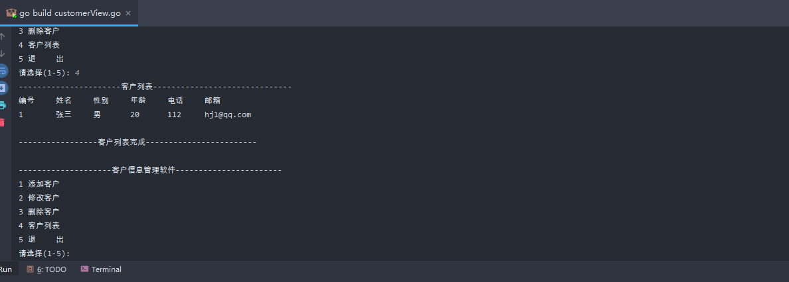

11.2. 客户信息关系系统¶
11.2.1. model¶
model/customer.go
package model
import "fmt"
// 声明一个Customer结构体，表示一个客户信息
type Customer struct {
Id int
Name string
Gender string
Age int
Phone string
Email string
}
//使用工厂模式返回一个Customer的实例
func NewCustomer(id int, name string, gender string, age int, phone string, email string) Customer {
return Customer{
Id: id,
Name: name,
Gender: gender,
Age: age,
Phone: phone,
Email: email,
}
}
//第二种创建Customer实例方法，不带id
func NewCustomer2(name string, gender string, age int, phone string, email string) Customer {
return Customer{
Name: name,
Gender: gender,
Age: age,
Phone: phone,
Email: email,
}
}
func (this Customer) GetInfo() string {
info := fmt.Sprintf("%v\t\t%v\t\t%v\t\t%v\t\t%v\t\t%v", this.Id, this.Name, this.Gender, this.Age, this.Phone, this.Email)
return info
}
11.2.2. service¶
service/customerService.go
package service
import (
"github.com/go_hexin01/day35/model"
)
//该CuteomerService,完成对Customer的操作，包括增删改查
type CustomerService struct {
customers []model.Customer
//声明一个字段，表示当前切片含有多少个客户
//该字段后面，还可以作为新客户的 id+1
customerNum int
}
// 编写一个方法，返回*CustomerService
func NewCustomerService() *CustomerService {
// 为了能够看到有客户在切片中，我们初始化一个客户
customerService := &CustomerService{}
customerService.customerNum = 1
customer := model.NewCustomer(1, "张三", "男", 20, "112", "hjl@qq.com")
customerService.customers = append(customerService.customers, customer)
return customerService
}
// 返回客户切片List方法。
func (this *CustomerService) List() []model.Customer {
return this.customers
}
// 添加客户到customers切片
//!!!
func (this *CustomerService) Add(customer model.Customer) bool {
//我们确定一个分配id的规则，就是添加的顺序
this.customerNum++
// 将id赋值给新加入的信息中，自增1
customer.Id = this.customerNum
// 添加到切片
this.customers = append(this.customers, customer)
return true
}
// 根据id号删除切片中的元素
func (this *CustomerService) Delete(id int) bool {
index := this.FindByid(id)
if index == -1 {
return false
}
// 如果从切片中删除一个元素
this.customers = append(this.customers[:index], this.customers[index+1:]...)
return true
}
// 根据id查找客户在切片中对应下标，如果没有该客户，返回-1
func (this *CustomerService) FindByid(id int) int {
index := -1
//遍历this.customers切片
for i := 0; i < len(this.customers); i++ {
if this.customers[i].Id == id {
//找到
index = i
}
}
return index
}
// 根据ID获取切片内容信息
func (this *CustomerService) GetInfoById(id int) model.Customer {
i := id - 1
return this.customers[i]
}
//根据id修改客户信息
func (this *CustomerService) Update(id int, customer model.Customer) bool {
for i := 0; i < len(this.customers); i++{
if this.customers[i].Id == id{
this.customers[i].Name = customer.Name
this.customers[i].Gender = customer.Gender
this.customers[i].Age = customer.Age
this.customers[i].Phone = customer.Phone
this.customers[i].Email = customer.Email
}
}
return true
}
11.2.3. view¶
view/customerView.go
package main
import (
"fmt"
"github.com/go_hexin01/day35/model"
"github.com/go_hexin01/day35/service"
)
func main() {
// 在main函数中，创建一个customerView，并运行显示主菜单
customerView := customerView{
key: "",
loop: true,
}
//这里完成对 customerView 结构体的 customerService 字段的初始化
customerView.customerService = service.NewCustomerService()
// 显示主菜单
customerView.mainMenu()
}
type customerView struct {
//定义必要字段
key string //接收用户输入....
loop bool //表示是否循环的显示主菜单
//增加一个字段customerService
customerService *service.CustomerService
}
// 列出所有客户，遍历切片返回客户信息
func (this *customerView) list() {
//获取到当前所有的客户信息(在切片中)
customers := this.customerService.List()
//显示
fmt.Println("----------------------客户列表------------------------------")
fmt.Println("编号\t\t姓名\t\t性别\t\t年龄\t\t电话\t\t邮箱")
for i := 0; i < len(customers); i++ {
//fmt.Println(customers[i].Id,"\t",customers[i].Name ....)
fmt.Println(customers[i].GetInfo())
}
fmt.Printf("\n-----------------客户列表完成------------------------\n\n")
}
//得到用户的输入，信息构建新的客户，并完成添加
func (this *customerView) add() {
fmt.Println("----------------------------添加客户--------------------------")
fmt.Print("姓名:")
name := ""
fmt.Scanln(&name)
fmt.Print("性别:")
gender := ""
fmt.Scanln(&gender)
fmt.Print("年龄:")
age := 0
fmt.Scanln(&age)
fmt.Print("电话:")
phone := ""
fmt.Scanln(&phone)
fmt.Print("邮箱:")
email := ""
fmt.Scanln(&email)
//构建一个新的Custom实例，
//注意id号没有让用户输入，id是唯一的，需要系统分配
customer := model.NewCustomer2(name, gender, age, phone, email)
//调用
if this.customerService.Add(customer) {
fmt.Println("------------------添加完成--------------------")
} else {
fmt.Println("------------------添加失败--------------------")
}
}
//得到用户的输如id，删除该id对应的客户
func (this *customerView) delete() {
fmt.Println("----------------------------------删除客户----------------------------------")
fmt.Println("请输入要删除客户的编号(-1退出)")
id := -1
fmt.Scanln(&id)
if id == -1 {
return //放弃删除操作
}
fmt.Println("确认是否删除(Y/N)")
// 这里可以加入一个循环判断，直到用户输入y或者n，才退出
choice := ""
fmt.Scanln(&choice)
if choice == "y" || choice == "Y" {
//调用customerService的Deletc方法
if this.customerService.Delete(id) {
fmt.Println("----------------------删除完成---------------------------------------")
} else {
fmt.Println("------------删除失败，输入的id号不存在--------------------------------")
}
}
}
//得到用户的输入id，修改该id对应客户
func (this *customerView) update() {
this.list()
fmt.Println()
fmt.Println("---------------修改客户--------------------------")
fmt.Println("请输入要修改客户的编号(-1退出)")
id := -1
fmt.Scanln(&id)
if id == -1 {
return //放弃修改操作
}
fmt.Println("确认是否修改(Y/N)")
//这里可以加入一个循环判断，直到用户输入y或者n，才退出...
choice := ""
fmt.Scanln(&choice)
if choice == "y" || choice == "Y" {
//调用CustomerService的FindByid方法
if this.customerService.FindByid(id) != -1 {
customer := this.customerService.GetInfoById(id)
fmt.Printf("姓名(%v:)", customer.Name)
name := ""
fmt.Scanln(&name)
fmt.Printf("性别（%v）：", customer.Gender)
gender := ""
fmt.Scanln(&gender)
fmt.Printf("年龄（%v）：", customer.Age)
age := 0
fmt.Scanln(&age)
fmt.Printf("电话（%v）：", customer.Phone)
phone := ""
fmt.Scanln(&phone)
fmt.Printf("邮箱（%v）：", customer.Email)
email := ""
fmt.Scanln(&email)
customer2 := model.NewCustomer2(name, gender, age, phone, email)
this.customerService.Update(id, customer2)
}
}
}
//退出
func (this *customerView) logout() {
fmt.Print("确认是否退出(Y/N)")
for {
fmt.Scanln(&this.key)
// 如果输入其他就一直询问，是否退出
if this.key == "Y" || this.key == "y" || this.key == "N" || this.key == "n"{
break
}
fmt.Print("你的输入有误，确认是否退出(Y/N)")
}
// 如果是y或者Y就退出程序
if this.key == "y"|| this.key == "Y"{
this.loop = false
}
}
func (this *customerView) mainMenu() {
for {
fmt.Println("--------------------客户信息管理软件-----------------------")
fmt.Println("1 添加客户")
fmt.Println("2 修改客户")
fmt.Println("3 删除客户")
fmt.Println("4 客户列表")
fmt.Println("5 退 出")
fmt.Print("请选择(1-5): ")
fmt.Scanln(&this.key)
switch this.key {
case "1":
//fmt.Println("添加客户")
this.add()
case "2":
//fmt.Println("修改客户")
this.update()
case "3":
//fmt.Println("删除客户")
this.delete()
case "4":
//fmt.Println("客户列表")
this.list()
case "5":
//退出
//this.loop = false
this.logout()
default:
fmt.Println("你的输入有误，请重新输入.....")
}
//如果loop为false状态就退出
if !this.loop {
break
}
}
fmt.Println("你退出了客户关系管理系统......")
}
